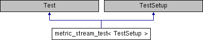

metric_stream_test< TestSetup > Struct Template Reference
Inheritance diagram for metric_stream_test< TestSetup >:

Public Types | |
| typedef TestSetup::metric_set_t | metric_set_t |
| typedef metric_set_t::metric_type | metric_t |
Public Member Functions | |
| metric_stream_test () | |
Public Attributes | |
| std::string | expected |
| std::string | actual |
Detailed Description
template<typename TestSetup>
struct metric_stream_test< TestSetup >
Fixture for expected vs actual binary data
Member Typedef Documentation
| typedef TestSetup::metric_set_t metric_set_t |
Type of metric set
| typedef metric_set_t::metric_type metric_t |
Type of metric
Constructor & Destructor Documentation
|
inline |
Constructor
Member Data Documentation
| std::string actual |
Actual binary data
| std::string expected |
Expected binary data
The documentation for this struct was generated from the following file:
- /io/src/tests/interop/metrics/metric_streams_test.cpp